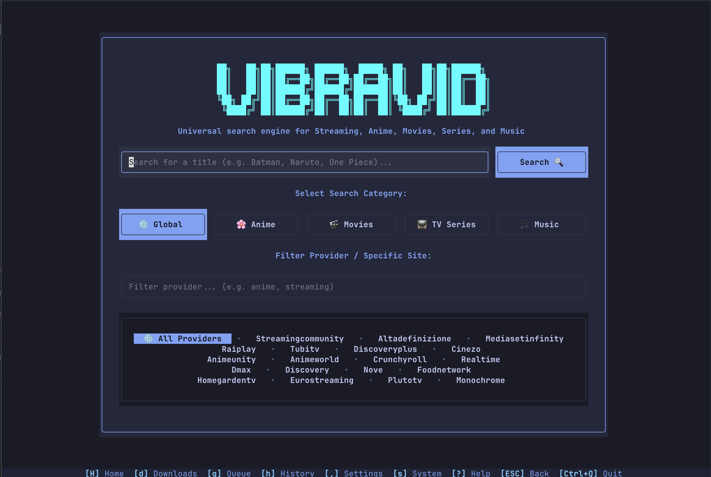
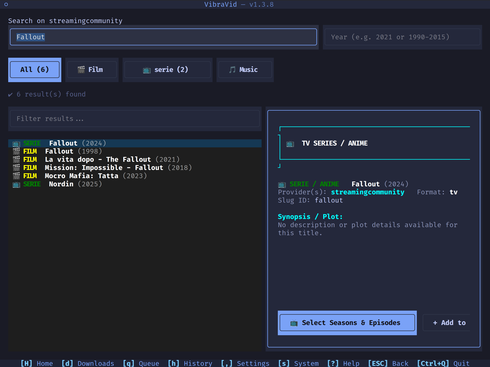
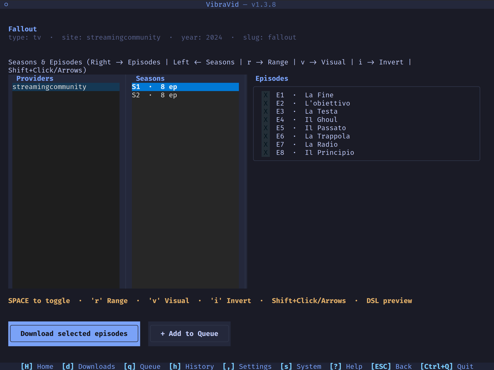
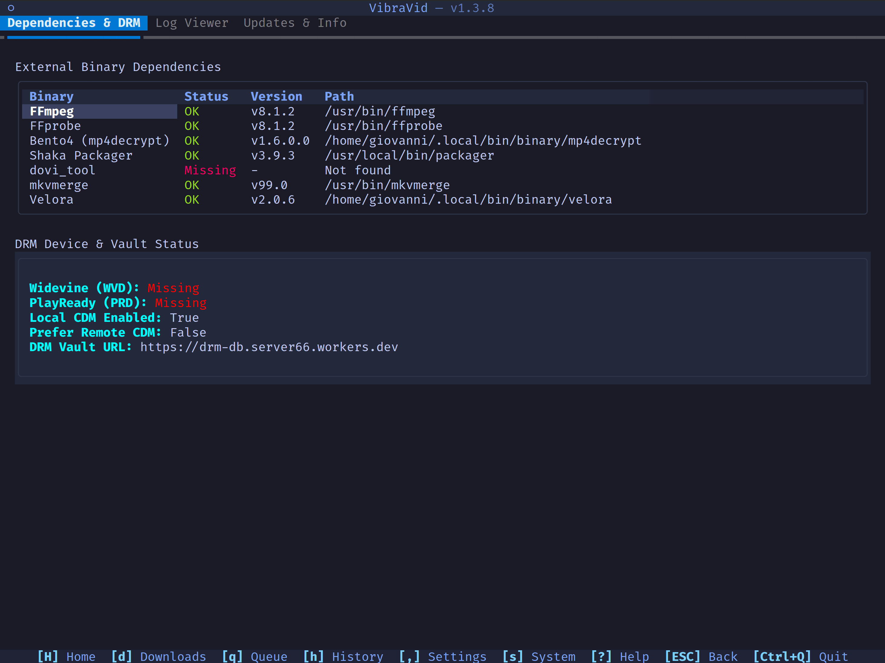
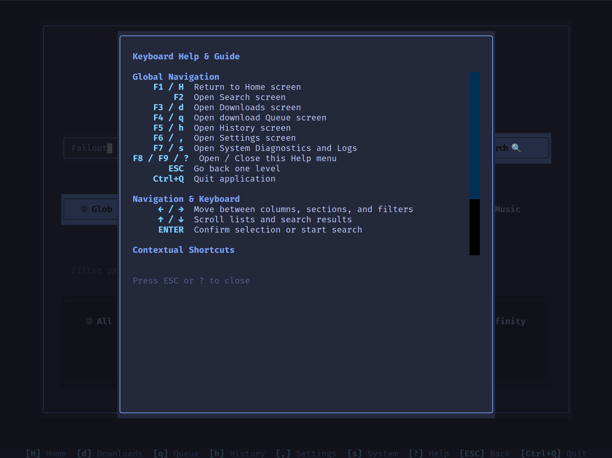

TUI (Terminal User Interface)

VibraVid includes a modern terminal-based user interface built with Textual, providing a rich, interactive experience for managing downloads directly from the command line without requiring a web browser.
Tip
TMDB-based filename tokens and poster embedding require a TMDB API key — see TMDB API Key for setup.
Launching the TUI
# Launch via python
python tui.py
# Or via uv package manager
uv run python tui.py
# Or if installed via pip/termux
vibravid --tui
Key Capabilities & Features
- Global Search Deduplication — Aggregates search results across all configured streaming and music providers into a single result entry per title, eliminating duplicate search results while showing all available sources.
- Multi-Provider Detail Navigation — Triple-column layout in title detail screens (
[Providers] → [Seasons] → [Episodes]), allowing seamless switching between providers on the fly without returning to search results if episodes are missing. - Automatic i18n Localization (IT / EN) — Automatic OS system language detection (Italian and English) with full bilingual support across all UI screens, data tables, modals, action bars, and keyboard guides.
- Interactive Queue & Batch Manager — Add, remove, reorder, and retry batch download jobs with custom CLI arguments and tags.
- Live Stream & Download Progress Tracking — Real-time progress indicators, speed, segment counts, track/stream details, and completed file actions (Open Folder / Launch File).
- System & DRM Inspector — Diagnostics tab inspecting external binary dependencies (
ffmpeg,mp4decrypt,aria2c, etc.), Widevine DRM CDM device status, an application log viewer, and an Updates tab (app version/info + check-for-update). - Full Keyboard & Mouse Navigation — Directional arrow key navigation, contextual shortcuts (
aselect all,uclear,Spacetoggle,ESCback,?help), and mouse click support.
TUI Screen Map
| Shortcut | Screen | Description |
|---|---|---|
F1 / H |
Home | Category selection (Film, Series, Anime, Music) and site filter shortcut cards |
F2 |
Search | Global search with deduplicated results and live metadata preview card |
F3 / d |
Downloads | Real-time progress table, track/stream inspector, and completed downloads |
F4 / q |
Batch Queue | Enqueue jobs, retry failed items, and manage CLI batch commands |
F5 / h |
Download History | Completed downloads table, output file path inspection, and re-queue actions |
F6 / , |
Settings Editor | Interactive section configuration editor with live save & reload |
F7 / s |
System & DRM | External binary checker, Widevine DRM device status, and log viewer |
F8 / F9 / ? |
Help Guide | Full keyboard shortcut reference and navigation guide |
Screenshots
Global search, deduplicated across providers, with a live metadata preview card:

Title detail — triple-column [Providers] → [Seasons] → [Episodes] navigation:

System & DRM Inspector — external binary checker and DRM device/vault status:

Help Guide — full keyboard shortcut reference:

Keyboard Shortcuts
| Key | Context | Action |
|---|---|---|
F1 / H |
Global | Jump to Home screen |
F2 |
Global | Jump to Search screen |
F3 / d |
Global | Open Active Downloads screen |
F4 / q |
Global | Open Batch Queue screen |
F5 / h |
Global | Open Download History screen |
F6 / , |
Global | Open Settings Editor screen |
F7 / s |
Global | Open System Diagnostics & DRM screen |
F8 / F9 / ? |
Global | Open Keyboard Help overlay |
ESC / b |
Global | Go back one level / Close modal |
Ctrl+Q |
Global | Quit TUI application |
← / → |
Title Detail | Navigate between [Providers] ↔ [Seasons] ↔ [Episodes] ↔ [Download] |
↑ / ↓ |
Lists / Tables | Move selection highlight up / down |
Space |
Title Detail | Toggle episode selection |
a |
Title Detail | Select all episodes in current season |
u |
Title Detail | Clear episode selections in current season |
r |
Title Detail | Open range-selection modal |
v |
Title Detail | Toggle visual range anchor |
i |
Title Detail | Invert episode selection |
Ctrl+S |
Settings Editor | Save the currently open section |
r |
System & DRM | Refresh diagnostics/DRM status |
Enter |
Global | Confirm / Open selected item |